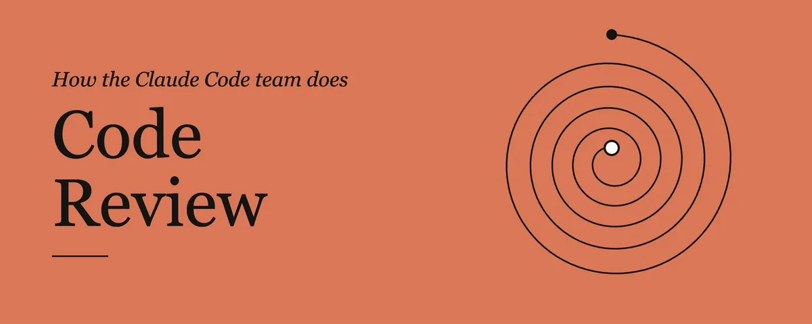
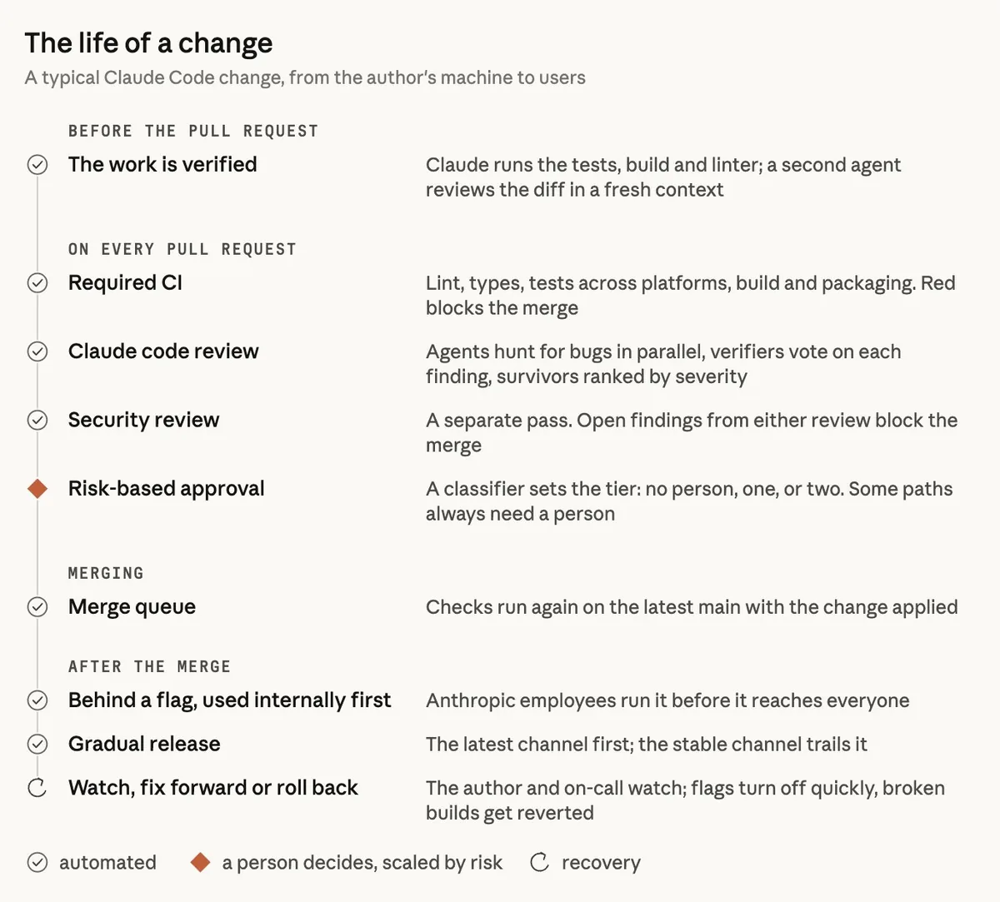
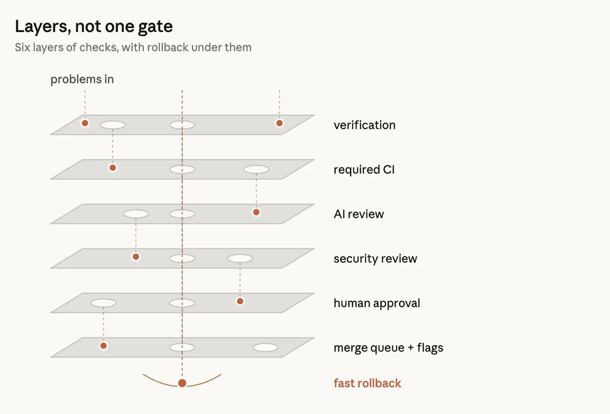
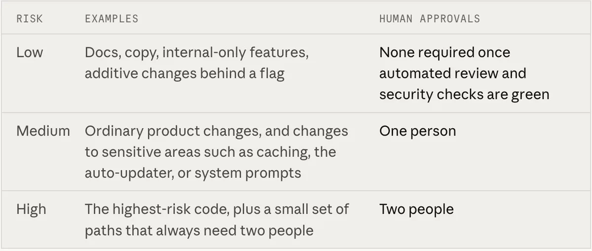
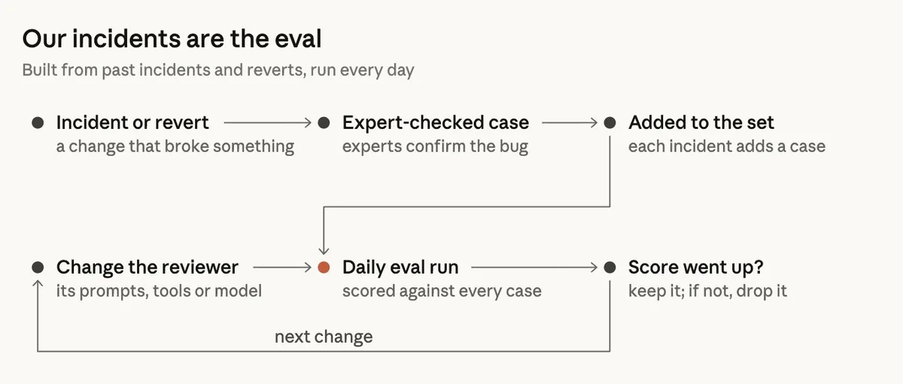
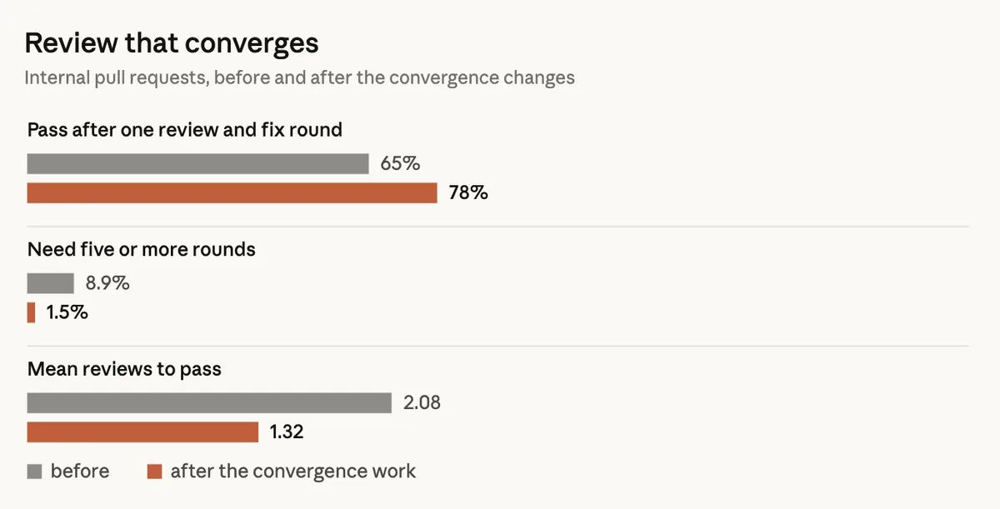
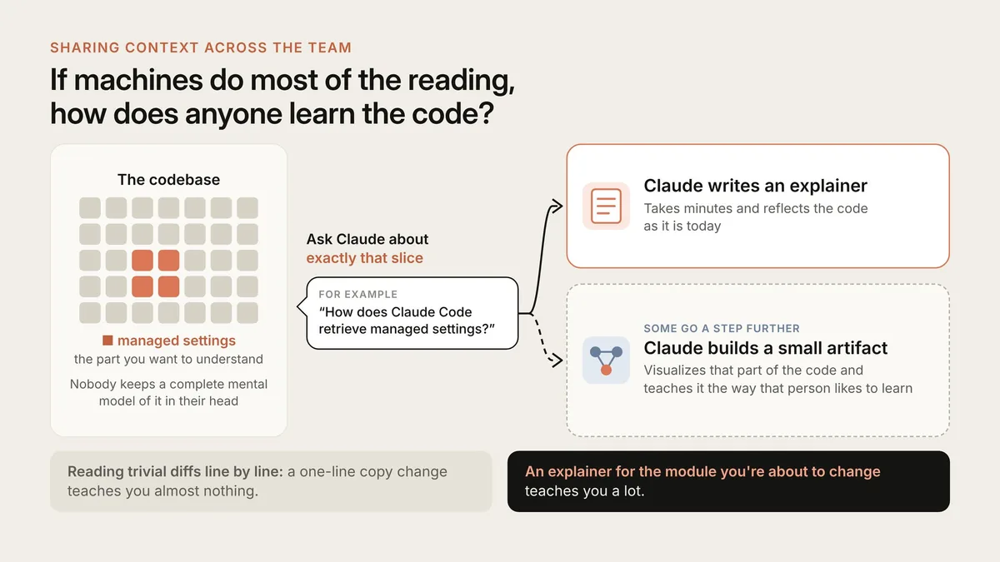

是什么
claude.dev 博客 2026-10-15 发表的工程文章，作者 Addy Osmani、Morgan Westlee Lunt、Qing Wang。文章讲 Claude Code 团队在“约 90% 代码由 Claude 写”的情况下怎么做代码评审：大部分“阅读”交给机器，人的时间只花在机器不擅长的判断上，同时大力投资“犯错后能快速撤回”。
结果：2026 年 6 月到 9 月，合入 Claude Code 代码库的 PR 数量翻了一倍多，需要回滚的比例却下降了 40% 以上。
核心观点
- 评审没有取消，变的是位置和分工：评审从流程末尾的一道“闸门”，变成写代码过程中持续运行的检查，作者用“拼写检查”来比喻。
- “有没有人读过代码”只是个粗糙的替代指标。真正要问的是：这次变更可能出什么错，哪一种检查（自动的还是人工的）最适合拦住它？
- 优化目标是人的总时间：评审花的时间加上修复坏代码花的时间。回滚率和事故率是护栏，这两项上升就说明时间没省下来，只是挪了地方。
- 多层而不是单闸：每层都会漏，叠起来就很少有问题能全部穿过，剩下的交给快速回滚。
- 人的角色变了：不再逐个读 diff，而是判断方向、守高风险代码、把关架构、读证据，并对结果负责。
重新想清楚评审是干什么的
智能体写代码会让变更数量暴涨：Anthropic monorepo 每天落地的变更从 5 月约 2,500 个涨到 9 月 3 万多个（与源码管理那篇用的是同一组数字）。Claude Code 虽然在独立仓库里，压力同样很大，逐行人工评审基本做不到。
作者把代码评审拆成两项工作：① 在上线前发现并修复问题；② 在团队里建立对代码库的共同理解。全文主要讲第一项，第二项放在后面专门讨论。
观念上的关键转变是：大多数变更在请人看之前，已经被 Claude 至少审查并修过一轮，常规错误在这一步就被拦下，团队注意力留给更高层次的问题。
稀缺资源：人的时间和注意力
目标写得很具体：Claude Code 的各个仓库（CLI、桌面和 Web 应用、移动应用）里，大多数 PR 最多只需一位人类参与即可合入（这个人可以就是作者），同时回滚和事故不增加。
怎么度量人的时间：每个 PR 的人工批准数（中位数和 P95）、人工评论数、PR 等人的时长。回滚率和事故率是护栏。
一次变更的旅程：七层检查
原文 FIG A 画的是一次变更从作者电脑（或 Slack 里的 Claude 会话）一路到用户手里的路径，FIG B 是“多层而非单闸”的示意（见原文）。下面是本站的简化重画：
先自证
AI 评审
安全评审
（阻断）
人工批准
+ 开关 + 灰度
快速回滚
回滚
哪层该拦住？
本站重画的简化示意：每层都会漏掉一些问题，叠加后很少能全部穿过，剩下的靠回滚。
① 别人看之前，先自证
- 大部分评审现在发生在 PR 出现之前。给 Claude 一个能实际运行的验证手段（测试、构建、和设计稿对比的截图），要它拿出输出，而不是只说“做完了”。然后用一个上下文全新的子智能体审 diff。
- 提 PR 前，很多人还会跑几个内部 skill：找 bug、精简 diff、端到端检查行为；UI 改动还要对照设计规范。
- Claude Code 作者 Boris Cherny 认为，给 Claude 一个验证自身工作的手段大概是拿到好结果最重要的一件事，估计能让最终结果好 2–3 倍。他也说验证方式因领域而异，可能只是一条 bash 命令、一套测试，或者在浏览器、手机模拟器里试用。
- 自动评审反复标出同一类问题时，就从源头修：改 skill、加 lint 规则，或者更新说明文件：
CLAUDE.md：说明项目是什么（技术栈、约定、目标和非目标）。每次评审都会加载，所以大仓库里要写短，细节链接到其他文档。评审器也会标出违反其中约定的代码，以及让其中某行变得过时的改动。REVIEW.md：由代码 owner 写，告诉评审器这块代码里什么最重要；团队还会单独检查评审器有没有真的照做。好的 REVIEW.md 都很短：写明这个仓库里“失败”长什么样（文档的失败是 “it lies”，即内容不实；配置的失败是 “it misroutes”，即路由出错），限制 nit 数量，列出跳过的路径，要求给出文件和行号作证据，而不是看名字就猜；总结要以问题数量开头，没问题时直接说没问题。
② 每个 PR 都有 AI 评审
- 人看之前，Claude 先审：结合整个仓库和 PR 声明的意图读 diff，判断它是否解决了问题、是否契合系统、会不会弄坏别处。修 bug 的 PR，还会追查根因。
- 对外版本 Code Review for Claude Code 已在 Team / Enterprise 计划正式可用，本地可以用
/code-review跑轻量版。 - 研究预览上线后，内部 PR 中收到实质性评审意见的比例从 16% 升到 54%。超过 1,000 行的 PR 多数会有发现，小 PR 多数没问题。管理员可以给每个仓库选 Quick / Standard / Deep 三档；漏掉一个 bug 的代价高于多花的评审时间时，Deep 档才值得。
- 发现要先经智能体验证：多个智能体并行找 bug，再由另一组智能体对每条发现投票，足够多的票认为是真问题才发出来；只涉及风格、诊断或清理的发现会被丢弃。这些过滤规则都在自家 PR 上做过 A/B 测试。留下的发现按严重度排序，以行内评论呈现，标为 Important / Nit / Pre-existing，这样不是本 PR 引入的旧 bug 不会算到作者头上。
- 每条发现都必须回应：要么修，要么写明理由后关闭线程。修复经常由智能体在夜里接手，作者第二天回来时 PR 已经又过了一轮。
③ 可以阻断合并的安全评审
安全有单独的自动评审。只要 bug 评审或安全评审还有未关闭的发现，PR 就不能合并。处理误报的方式是写一句简短理由关闭线程；后续提交修好了问题，对应发现会自动消失。外部可以用开源的 security review GitHub Action 或 /security-review 命令搭出同样的流程。
④ 阻断式自动检查
常规检查：lint、类型检查、全平台测试、构建（扩展 CI 的做法另有文章）。一个典型的 CLI PR，在人看之前可能已经跑了几十项检查。PR 模板要求写明“怎么测的”和“怎么撤回”。这部分 Claude 可以代填，但由提出这个变更的人签字确认。
⑤ 按风险分级的人工批准
| 风险 | 典型例子 | 需要几位人类批准 |
|---|---|---|
| 低 | 文档、文案、仅内部可用的功能、放在 flag 后面的增量改动 | 自动评审和安全检查全绿后，无需人工 |
| 中 | 普通产品改动；缓存、自动更新器、系统提示词等敏感区域 | 1 人 |
| 高 | 风险最高的代码，以及少数始终要求两人的路径 | 2 人 |
- 档位由变更决定，不由作者决定：一个分类器读变更、定档；另一个分类器判断“虽然档位说不需要，但这次是否仍该加一个人”。owner 标为敏感的路径和所有 CI workflow 文件，始终需要人。
- 轻量通道只给受信任的作者（仓库信任名单上的人，主要是负责该仓库的团队），其他人一律要第二个人批准。智能体的批准永远不能顶替人的批准名额。
- 谁发起 prompt，谁负责：智能体写的 PR，指挥它的那个人算作必需评审人之一，就像代码是他亲手敲的一样。
- 批准只针对某一个具体 commit：之后出现系统无法担保的新提交（比如智能体的推送、手工解决的合并冲突），就要重新批准。
⑥ 合并队列、功能开关、渐进发布
合并队列会在应用了本次变更的 main 上重跑全部检查，防止两个各自通过的 PR 合在一起把 main 弄坏。新行为通常先放在 flag 后面给 Anthropic 员工用，内部的重度使用常常比用户更早暴露回归。公开发布先进 latest 渠道，stable 渠道随后跟进。
⑦ 快速发现、快速回滚
总会有错误漏过去，所以最后一层追求“发现快、撤回快”：关开关不用重新部署；Claude Code 有每周轮换的 on-call；事故复盘会问“本该由哪一层拦住”。作者也承认短板：发现坏合并仍然依赖作者、on-call 和回滚/事故看板，还没有在这些指标变化时自动收紧审批的“熔断器”，工程师希望先有它，再让更多代码走零人工合并。一位同事的看法是：放慢速度确实能降低错误率，但主要是因为你什么都做得少了。团队宁可提高发现和修复问题的速度。
让 AI 评审越来越好
- 事故就是 eval：收集过去引发事故的 PR，连同后续的修复和回滚，请熟悉那块代码的工程师确认每个 bug 及其位置。评审器每天在这个集合上跑一遍；每出一次事故集合就变大，评审器的每次改动都用全集打分（原文 FIG C）。
- 用人的反应度量噪声：只要不在乎误报，多抓 bug 很容易，所以要有制衡。评审器的每条评论都按 PR 上的人怎么回应来分类：修了、说它错了、说这是有意为之、觉得无关紧要。另外在已知干净的 PR 上运行评审器，统计它有多少次报出“会诱导人做出有害改动”的问题。写下来的优先级是：先抓真 bug，其次减少评审轮数。
- 作者是智能体时，噪声代价更高：人几秒钟就能忽略一个 nit，智能体却会去改，于是多一次提交、多一轮评审。
- 评审必须收敛：智能体作者和智能体评审可以无限地互相“喂活”。有个 CLI PR 一夜之间来回了 50 多轮，直到作者叫停。对评审器反复标记的内容做 git blame，发现约 59% 是评审器第一轮时就已存在的代码，也就是说它很少发现新 bug，只是每轮多挖出几个旧的。作者也承认这是自己造成的：大家习惯默认跑好几轮，因为每轮都能多抓到一点。风险高的变更值得这样做，但不是每个 PR 都值得。
- 改进措施（同时跟踪 recall 和“几轮通过”）：
- 轮数上限：3 轮后，评审器请作者退一步，重新考虑方案。
- 前几轮之后只审新增 diff。
- 标出 bug 的类别，让作者把同类问题全部修掉，而不是只修一行。
- 已经发过的发现不重复发。
- 评审智能体还会每晚扫描存量代码，在旧 bug 冒出来之前抓住它们。原文 FIG D 显示，收敛改动之后，内部 PR 的平均评审轮数明显下降。
人留在哪里
把资深工程师从深度工作里拉出来抓一个常规错误，代价比一次自动评审高得多。原文 FIG E 总结了留给人的五类决定：
- 到底该不该做：方向、品味、范围。有个团队宣布自己的评审瓶颈已经解决，但仍对团队外部来的改动保留人工评审，好让有人问一句 “should we even do this?”（这件事我们真的该做吗？）
- 高风险代码：计费、自动更新器、CI workflow。
- 会被别人照抄的架构模式。
- 读证据：测试输出、实际跑的命令及其返回、截图、评审器的发现。如果你说不出这些检查会漏掉什么，就该要求一次真正的评审，而不是随手批准。
- 对结果负责：每个上线的变更都有一个人为它负责，不管是谁敲的代码。
团队怎么共享上下文
评审的第二项工作是传播对代码库的理解。机器读了大部分代码之后，人从哪里学？作者坦言没有正式流程，也没人在脑子里装着 Claude Code 的完整模型，他们认为也不需要。想了解哪一块，就让 Claude 针对那一块写一份讲解，几分钟就好，而且反映的是代码当下的样子。有人更进一步，让 Claude 做一个小型可视化 artifact，按自己喜欢的方式来讲解这块代码。
作者的论证是：一行文案改动几乎教不了你什么，而为你即将修改的模块写一份讲解，能教你很多。再加上团队默认在公开 Slack 频道里工作，别人在做什么，大家边做边看得到。
“谁合入，谁负责”与及时转向
合入的中小改动出了问题，按团队惯例通常由作者自己修。以下几点让这条惯例不至于变得残酷：
- 变更粒度小，所以好审、好调试、好回滚；
- 一切可逆：开关、回滚和分阶段发布，几分钟内就能撤销大多数错误；
- 按影响范围（blast radius）定门槛：代价高的代码配更多人、更多检查；
- 遥测和内部使用让回归很快暴露；
- 不追责：由作者修是因为他上下文最多，事故复盘看的是系统。
所有权也是共享的：在公开频道里，任何人都能看到别人在做什么，接过一个话头，或者指派一个 Claude 去补缺口，不负责这块代码的人也会给反馈。作者认为，这种开放是不给每一行都设闸门、质量仍然能保持很高的重要原因。
转向：智能体让“开个头”变得很便宜，所以有些工作本来就不该合入。通常是频道里有人问为什么、指出之前的某个决定，或者提出更简单的路线，作者就关掉或改造这个 PR。代码写得快，关掉 PR 也不觉得可惜。诀窍是尽早在讨论串里提出不同方向，而不是等 PR 写完了再留一条阻断式评论。
怎么照着做 & 往哪走
原文最后给了一份分阶段清单，大意如下：
- 提 PR 前：在简短的
CLAUDE.md里列出智能体能跑的检查，配好跑格式化和 lint 的 hooks；本地跑/code-review、/security-review，或者让一个全新上下文的子智能体来审；加一份REVIEW.md，把反复出现的评审意见沉淀进去。 - 每个 PR：强制 CI，PR 模板加上 Testing / Risk / How to revert；先在一个仓库接入 AI 评审，调几周 REVIEW.md 再推广；加自动安全评审，并要求所有评审线程关闭后才能合并；评审力度和风险匹配（Quick / Standard / Deep）；限制轮数，前几轮之后只审新 diff。
- 批准：把风险分级写下来，由变更而不是作者决定档位，先严后松、凭证据放宽；轻量通道只留给受信任的作者；用 CODEOWNERS 和分支保护，让鉴权、计费、CI/发布 workflow 和安装器始终需要人；机器人的批准永远不能替代必需的人工批准，有新提交就作废旧批准。
- 合并及之后：合并队列、功能开关、内部先用、分阶段发布、一键回滚；把事故和回滚做成 eval 集，评审器的 prompt、工具或模型一变就重新打分；度量人的时间，以回滚率和事故率为护栏。
往哪走：Code Review 产品对外仍然坚持“批准 PR 是人的事”，产品只发发现，不发批准。Anthropic 自己的仓库走得更远：由 owner 决定哪些低风险改动可以只靠自动检查合入，而且这条线还在移动。评审漏了东西时，他们会问模型当时缺了什么信息，再把修补写进 CLAUDE.md、某个 skill 或一项新检查。目标不变：每个变更花更少的人类时间，回滚不比以前多。
对我们的启发
- 先定义优化目标和护栏：“人的总时间”配“回滚率 / 事故率”这对指标，可以直接拿来用。不定护栏的“提效”，往往只是把成本挪到了事后修复上。
- 验证优先于评审：让智能体拿出可运行的证据（测试输出、截图），再加一个全新上下文的子智能体复审。这一步成本最低、收益最大。
- 把评审意见沉淀成文件：短的
CLAUDE.md加上按目录写的REVIEW.md，写清“这里的失败长什么样”和“要给文件行号作证据”。同一条意见出现两次，就该写进文件或者变成 lint。 - 多智能体投票降噪：并行找 bug、独立投票、丢弃风格类发现、标出 Pre-existing。智能体作者对噪声更敏感，降噪比提高召回更重要。
- 给智能体之间的循环设上限：3 轮上限、只审增量 diff、按 bug 类别修。这条也适用于任何“智能体互评”的流水线（比如我们自己的 harness）。
- 风险分级看变更本身，人的名额不可替代：谁发起 prompt 谁算评审人，批准绑定具体 commit。这几条规则成本很低，值得照搬。
- 可逆性是放权的前提：开关、合并队列、灰度、一键回滚越成熟，能交给自动化的就越多。作者也坦白还缺“指标恶化就自动收紧”的熔断器，这正是值得补的一环。
- 和源码管理那篇合起来读：那篇讲基础设施怎么扛住每天 3 万次合并，这篇讲流程和人怎么扛住。两篇的共同主题都是把系统按“智能体规模”重新设计。
附录：Addy Osmani X 长文版全文中译
2026-10-26 14:27（UTC+8），Claude Code 团队的 Addy Osmani（@addyosmani）在 X 上以长文（Article）形式发布了本文的改写版：How the Claude Code team does code review（截至 2026-10-27 12:20 UTC+8：约 172 万浏览、1.05 万赞、2.77 万收藏）。文末注明“A rewrite of our original article and checked with Pangram”（对原文的改写，并用 Pangram 做了检查）。以下是这一 X 版本的全文中文翻译，作者本人发布、本站翻译；与上方基于 claude.dev 原文的导读内容大体一致，个别表述（如“六层检查 + 回滚”）以此版为准。文中配图来自该长文，转为 WebP，图中英文在图注里译出。

Claude Code 团队怎么做代码评审
我们之前提到过，Claude Code 大约 90% 的代码是 Claude 写的。那么，在这种规模下我们怎么做代码评审？到底还有谁在读代码？代码出了问题怎么办？
这篇文章介绍 Claude Code 团队的代码评审流程，以及我们是如何改进它的。6 月到 9 月之间，合入 Claude Code 代码库的 pull request 数量翻了一倍多，而需要回滚（revert）的 PR 占比下降了 40% 以上。
我们并没有停止代码评审。相反，我们把大部分“阅读”自动化了，并把它调到以节省人的时间和精力为目标。我们还在“让撤回错误更快、更容易”这件事上做了大量投入。
重新思考代码评审的目标
智能体写代码之后，变更的数量迅速增长。在我们的 monorepo 里，每天合入的变更从今年 5 月的约 2,500 个增长到 9 月的 30,000 个以上。
Claude Code 虽然不在这个 monorepo 里，但它承受的压力同样很大。节奏这么快的时候，靠人一行一行地手动评审会越来越难，甚至根本不可能。
代码评审有两个目的：
- 在上线之前发现并修正 bug
- 让团队对代码库形成共同的理解
本文主要讨论第一个目标，第二个目标我们会在文末谈到。
在我们看来，“有人读过这段代码吗？”只是一个不精确的衡量方式，它真正想问的是：“这个改动可能出什么问题？用哪种检查——自动的还是人工的——最适合把它拦下来？”
这个问题也改变了代码评审的时机。传统上，代码评审是事后检查：代码写完了，PR 提了，然后等别人来看。而我们把代码评审融进了工作流本身，它更像是你一边写一边持续进行的拼写检查。
大多数变更在请人看之前，都已经被 Claude 至少评审并修正过一次。这样，大部分常规 bug 已经被拦下，人的注意力留给更高层次的考量。
人的时间和注意力
我们希望把人的时间和注意力留给只有人能处理的事，同时确保有足够的自动化覆盖其余部分。即使以我们现在的速度，人要做的事情依然多得惊人，团队几乎每天都会遇到新的、前所未有的挑战。
因此，人的时间是一种“双向”成本。我们不仅计算人花在代码评审上的时间，也计算他们修复坏代码引入的 bug 所花的时间。如果只减少了前者而没有减少后者，那就并没有真正节省人的时间。
所以我们的目标是：Claude Code 各仓库（CLI、桌面端与网页端应用、移动端应用）里的大多数 pull request，最多只需要一个人参与（这个人可以就是作者）就能合入，同时回滚和事故不增加。
我们用这些指标追踪人的时间：每个 PR 的人工批准次数中位数（以及第 95 百分位）、人工评论数量，以及 PR 等人处理的时长。回滚率和事故率作为护栏：如果这两个指标上升，说明我们并没有减少人的时间，只是把它挪了个地方。
一个变更要经历什么？
一个典型的变更，不管它来自工程师的笔记本电脑，还是 Slack 里的一个 Claude 会话，都要经过多层评审。

PR 之前：工作已被验证——Claude 运行测试、构建和 linter；第二个智能体在全新上下文中审 diff。
每个 PR：必需的 CI——lint、类型、跨平台测试、构建与打包，红灯即阻断合并；Claude 代码评审——多个智能体并行找 bug，验证者对每条发现投票，留下来的按严重程度排序；安全评审——单独一轮，两种评审中任何未关闭的发现都会阻断合并；按风险批准（由人决定）——分类器定档：不需要人、一个人或两个人，某些路径永远需要人。
合并：合并队列——在应用了该变更的最新 main 上再跑一遍检查。
合并之后：放在开关后面、先内部使用——Anthropic 员工先用，再推给所有人；逐步发布——先进 latest 渠道，stable 渠道随后跟进；观察、向前修复或回滚——作者和值班人盯着，开关可以快速关闭，坏掉的构建会被回滚。
图例：自动 / 由人决定（按风险分级）/ 恢复手段。
上图是一个典型的 Claude Code 变更从作者环境到生产环境的过程。这个流程大部分是自动化的，人的注意力集中在有风险的部分。
我们有六层检查，外加一套回滚机制来处理漏过去的问题。

每一层都能拦住一些 bug，也会漏掉另一些。能穿过所有层的 bug 很少，万一真有，我们还有回滚机制兜底。
1. 提 PR 之前的验证
我们的大部分评审在创建 PR 之前就完成了。我们会让 Claude 做一些可运行的事情，比如跑测试、跑构建，或者把截图和设计稿做对比。我们不让它只说“任务完成了”，而是要求它把结果拿给我们看。然后，再由一个子智能体在全新的上下文里评审这份 diff。这两种做法都写在我们的最佳实践指南里。
在开 PR 之前，我们很多人还会跑几个内部 skill：找 bug、精简 diff、端到端验证，以及对照设计规范检查 UI 改动。
Claude Code 的创造者 Boris Cherny 认为，给 Claude 配上一套验证流程，可能是获得更高质量结果的最大关键。
他估计，验证流程能让 Claude 的产出质量提升两到三倍。
不同领域的验证流程可能很不一样：
有时只是跑一条 bash 命令；有时是跑一套测试；有时是在浏览器或手机模拟器里测试应用。
如果自动评审器反复标出同一个问题，我们就从源头修掉——改 skill 本身、加一条 lint 规则，或者更新这样的文档文件：
- CLAUDE.md——项目说明文件，你可以用它给 Claude 提供项目背景（技术栈、约定、目标、非目标）。Claude Code 每一次评审都会读入这个文件，所以对大型代码库我们会让它保持简短，其余文档在这里引用即可。当代码违反了这个文件里的约定，或者某次更新让文件里的内容过时了，评审器都会标出来。
- REVIEW.md——代码 owner 在这里告诉评审器，他们负责的那部分代码里什么最重要。我们会单独验证评审器是否真的遵循了这些指引。好的 REVIEW.md 都很简短，重点在于：
- 定义这个项目里的“失败”是什么（文档不能说假话；配置不能把请求路由错）
- 限制吹毛求疵
- 定义要忽略的路径
- 要求给出“文件 + 行号”的引用，而不是猜文件名
- 要求一段顶层总结，包含问题数量，没有问题时要明确写出“no issues”
2. 每个 pull request 都有 AI 评审
每个 PR 在人工评审之前都会先收到一次 Claude 的评审。
评审会结合整个代码库以及 PR 作者陈述的意图来分析 diff，检查：
- 这个改动是否真的解决了它要解决的问题
- 这个改动是否契合更大的系统
- 这个改动是否没有破坏代码库的其他部分
评审 bug 修复时，机器人会尝试找到根本原因。
我们的公开产品 Code Review for Claude Code 现已向所有 Team 和 Enterprise 客户开放。另外还有一个供本地使用的轻量版本：/code-review。
自研究预览版发布以来，我们内部收到实质性评审意见的 PR 占比从 16% 上升到了 54%。对超过 1,000 行的 PR，Code Review 在大多数情况下都能发现问题；对大多数较小的 PR，则返回“无问题”的干净结果。管理员可以为仓库配置 Quick、Standard 或 Deep 三种模式。当漏掉一个 bug 的代价高于评审所花的时间时，Deep 模式就很有用。
在交给人评审之前，这些发现会先经过其他多个智能体的审核：
- 多个智能体并行寻找 bug
- 另行投票决定每条发现是真问题还是误报，只有得票足够的发现才会被确认
- 只涉及风格、诊断信息或代码清理的发现会被过滤掉（这些过滤器在推出前，我们先在自己的 PR 上做过 A/B 测试）
剩下的发现以行内评论的形式呈现，按严重程度排序，并标注为：
- Important（重要）
- Nit（小问题）
- Pre-existing（原本就有的问题——这样就不会因为不是这个 PR 引入的 bug 而不公平地责怪作者）
所有发现都必须处理：要么修掉，要么写明理由后关闭讨论线程。很多情况下，智能体会在夜里把问题修好，作者第二天回来时，PR 已经又过了一轮评审。
3. 可以阻断合并的安全评审
我们还会跑一次自动安全评审。只要还有未关闭的发现（无论来自代码评审还是安全评审），PR 就不能合并。作者可以修复问题，也可以附上简短理由关闭线程（这就是我们处理误报的方式）。
如果后续某次提交解决了问题，这条发现会被自动关闭。你可以用开源的安全评审 GitHub Action 或 /security-review 命令搭建同样的机制，具体配置方法参见 Claude Code 文档中关于自动安全评审的指南。
4. 会阻断合并的自动检查
标准检查：lint、类型检查、全平台测试、构建。（我们在另一篇文章里写过我们如何扩展 CI。）一个典型的 CLI PR 在有人看之前，可能已经跑了几十项检查。PR 模板里有问题询问这个改动是怎么测试的、要怎么撤回。Claude 可以替你回答这些问题，但作者有责任审阅这些答案。
5. 按风险分级的人工批准
有些改动比其他改动风险更大（比如修一处文档 vs. 改自动更新器），所以需要不同级别的评审。

低：文档、文案、仅内部可见的功能、放在开关后面的增量改动——自动评审和安全检查通过后，无需人工批准。
中：普通的产品改动，以及对缓存、自动更新器、系统提示词等敏感区域的改动——需要一个人。
高：风险最高的代码，以及一小部分永远需要两个人的路径——需要两个人。
档位由改动本身决定，而不是由作者决定。一个分类器根据改动确定风险等级；另一个分类器判断某个改动是否其实需要额外的批准，即使它所在的档位并不要求。有些路径永远需要额外批准：owner 标记为敏感的任何内容，以及所有 CI workflow 文件。
只有在仓库受信任名单上的作者才能享受放宽的评审要求，一般就是拥有该仓库的团队。其他所有人都需要第二个人批准。智能体的批准不算人工批准。自动评审可以放行低风险改动，但在需要人的时候，它不能代替人。
改动的作者要对改动负责，所以如果 PR 是智能体写的，操作这个智能体的人永远会被算作必需评审人之一。一次 PR 批准只对一个 commit 有效。如果落进来一个不可信的新 commit（比如智能体推送了什么，或者有人手动解决了合并冲突），PR 必须重新批准。
6. 合并队列、功能开关与分阶段发布
合并队列确保所有检查都在“已应用该改动的 main”上运行，避免两个各自通过的 PR 合在一起把 main 弄坏。新功能通常放在功能开关后面发布，Anthropic 员工最先拿到。由于我们自己大量使用这个产品，往往能比用户更早发现回归问题。
公开发布时，改动先进入 latest 渠道，stable 渠道随后跟进。
7. 快速反馈与回滚
总会有一些糟糕的合并漏过去。这是我们的最后一道防线，重点是尽快发现它们。放在功能开关后面的改动无需部署就能关掉。
Claude Code 实行每周轮换的值班制度，每次事故复盘都会回头看：本该由哪一层拦住这个问题。发现糟糕的合并，目前仍然要靠作者和值班人员，再加上监控回滚和事故看板。我们还没有根据这些指标自动调整批准要求的“熔断”机制，但随着我们朝着“合并时更少人工介入”推进，这是我们正在研究的方向。
有位团队成员指出，放慢速度、减少产出确实能提高准确率，但那主要是因为总工作量减少了。我们真正的重点，是提升快速发现和纠正问题的能力。
我们如何让评审器变得更好
我们的代码评审流程是一个持续改进的循环：
我们把事故当作评估指标。团队收集了导致事故的 PR，以及对应的向前修复和回滚，并请熟悉代码库的工程师逐一核实每个 bug 的位置和正确性。评审系统每天都会在这个集合上接受评估。

每一次事故都会扩充这个集合，而评审系统的每一次改动，都要在整个集合上接受评估。
为了衡量噪声，我们观察人对评审意见的反应。如果不在乎报出大量“非 bug”，提高找 bug 的比例很容易，所以必须加以约束。我们把每条评审意见按 PR 上的人如何处理来分类：修复了问题、拒绝了、说明是有意为之，或者认为无关紧要。此外，我们还会在已知干净的 PR 上运行评审系统，观察它多常报出“如果照做反而会造成有害改动”的意见。
我们明确的优先级是：第一，发现真正的 bug；第二，减少评审轮数。
当作者是智能体时，处理一条评审意见的成本更高。人类忽略一条 nit 只要一秒钟；而智能体要处理它，就会产生一次新的提交，以及新一轮评审。
评审过程必须收敛。智能体作者和智能体评审者有可能永远循环下去。我们曾看到 CLI 项目里的一个 PR 在一夜之间来回循环了五十多次，就是智能体作者和智能体评审者之间的拉锯。这个循环最后是手动停下的，否则它可能会无限继续下去。
我们对评审系统反复标出的内容跑了 git blame，发现约 59% 是从第一轮起就已存在的代码。也就是说，评审系统很少发现新 bug，只是每一轮都多翻出几个旧 bug。
我们自己让情况变得更糟：我们养成了默认跑好几轮评审的习惯，因为每一轮都可能发现不同的 bug。对高风险改动，迭代几轮评审可能有用，但并不是每个 PR 都需要。团队开始在召回率之外，也追踪“通过所需轮数”，并把重新评审改为：
- 限制轮数。三轮之后，评审系统会请作者重新评估整体方案。
- 前几轮之后，重新评审只看新的 diff。
- 指出 bug 的类别，让作者能把同类问题全部改掉，而不只是改一行。
- 避免重复报告已经指出过的问题。
评审智能体还会在夜间对当前代码库运行，帮助我们在历史 bug 扩散之前把它们找出来。

人在回路中
让一位资深工程师停下手头的工作去评审一个常见错误，比把这件事自动化要昂贵得多。但在一些任务上，人类评审者仍然不可或缺：
- 这个东西该不该做？决定做还是不做，设定产品的愿景、品味和目标。有一个声称已经解决了代码评审瓶颈的团队，对来自团队外部的改动仍然坚持人工评审，以确保做的是对的事情。
- 审计危险代码（计费、自动更新器、CI workflow）。
- 架构评审，因为这些选择定下了其他人会遵循的惯例。
- 核验证据（测试输出、执行过的命令、截图、评审意见）。如果你说不出这些检查会漏掉什么，就别只求一个 👍——你需要的是一次真正的评审！
- 承担责任。每一个上线的改动，无论是谁敲的代码，都要有一个人为它负责。
团队上下文
代码评审一直还有另一重作用：传达代码库的变化。读同事改动的 diff，通常是人们了解改了什么、代码库如何运作的方式。如果大部分阅读都交给了机器，那么学习代码库的方式会变成什么？
我们没有任何正式机制来做这件事。团队里没有任何人脑中装着 Claude Code 的完整心智模型，我们也不认为有人需要。相反，当有人想了解代码库的某一部分时，就让 Claude 针对那一块生成一份讲解。这只需要几分钟，而且讲解永远是最新的。

我们当中有些人会更进一步，让 Claude 生成一个小 artifact，把这块代码可视化，并用自己喜欢的方式来讲解。
比起逐行阅读琐碎的 diff，这是更好地使用人类注意力的方式——琐碎的 diff（比如改一行文案）教不了你多少东西；而为你将要修改的模块生成一份讲解，能让你学到很多。
另外，我们总体上默认公开：在公开的 Slack 频道里工作，别人正在做什么，在做的过程中就能看到。
“谁合入，谁负责”
如果你合入了一个小型或中型改动，结果还是出了问题，通常的预期是由你自己来修。这之所以不会失控，有几个原因：
- 改动都很小，容易评审、调试和撤回。
- 一切都可以撤回。功能开关、回滚和分阶段发布能在几分钟内逆转大多数错误。
- 影响范围决定门槛。代价越高的代码，看它的人和做的验证就越多。
- 遥测和内部使用能很快暴露回归问题。
- 这不是追责游戏。修复问题的人之所以负责，是因为他掌握最多的上下文。事故复盘考察的是系统。
另外，团队里很多责任是共同承担的，因为大家都在公开频道里工作。任何人都能看到别人在做什么，加入讨论，或者让 Claude 去找漏洞。反馈也会来自非代码 owner。这种开放，是在没有为每一行代码设闸门的情况下仍能保持高质量的重要原因。
及时转向
有了智能体，开始一项新工作的成本很低，但有时你不该开始。这通常发生在有人在频道里指出某个提议的改动是条错路（引用之前的决定，或者提出更好的路径）的时候，作者要么关掉 PR，要么改变实现方式。
因为代码本来就写得很轻松，关掉 PR 并不会让人觉得有什么损失。关键是在讨论早期就转向，而不是等到最后，在一个已经定稿的 PR 上留一条阻断性评论。
如何落地
这套方法的大部分组成部分，你的团队现在就能用上。
在 pull request 之前
- 给智能体一份它能运行的检查清单，把这些检查列在一份简短的 CLAUDE.md 里
- 通过 hooks 让智能体调用格式化工具和 linter
- 在本地运行
/code-review和/security-review，或者让一个全新上下文的子智能体评审改动 - 创建一份 REVIEW.md，用它记录反复出现的评审问题
每个 pull request
- 强制 CI
- 在 PR 模板中加入“Testing（测试）”“Risk（风险）”和“How to revert（如何撤回）”
- 先在一个仓库上加入 AI 评审（Code Review for Claude Code，或 Claude Code GitHub Action），花几周时间迭代你的 REVIEW.md，再推广到更多仓库
- 加入自动安全评审
- 要求所有评审线程都关闭后才能合并
- 按风险决定评审力度：常规改动快速过一遍，高风险领域（bug 代价高的地方）做彻底评审。Code Review 提供 Quick、Standard 和 Deep 三个级别
- 限制评审轮数，几轮之后只评审新的 diff
批准
- 定义风险等级，依据改动而不是作者来定。先严格，随着证据积累再逐步放宽
- 宽松的批准通道只留给受信任的作者
- 机器人的批准不能用来满足必需的批准。有新提交推送时，作废之前的批准
- 指定由人来批准控制鉴权、计费、CI 和发布 workflow 的代码与策略，以及安装程序。用 CODEOWNERS 和分支保护来实现
合并及合并之后
- 建立合并队列
- 试用功能开关
- 先向内部用户发布
- 分阶段发布
- 建立一步回滚机制
- 通过记录事故和回滚来构建一套 eval
- 每次修改评审器的提示词、工具或模型时，都重新给它打分
- 追踪人的投入，以回滚率和事故率作为护栏
往哪里走
Code Review 发布时的设计意图是：最终的批准决定仍然由人来做，产品只负责发布它的发现。但在我们自己的仓库里，我们走得更远：owner 正在决定哪些低风险改动在自动检查通过后可以自动合并。而这条边界还会继续演变。
所以，每当我们的评审器漏掉了什么，我们都会问自己：模型的上下文里缺了什么？然后把它变成一份 CLAUDE.md、一个 skill 或一项新检查。我们的目标没有变：在回滚率不高于现在的前提下，减少每个改动所需的人力。
所以，如果你也允许智能体创建 pull request，请告诉我们：你自动化了哪些检查，哪些需要人，以及我们哪里做得不对。
（原文末注：A rewrite of our original article and checked with Pangram.——对我们原文的改写，并用 Pangram 做了检查。）
评论区摘录
X 搜索 conversation_id 未见作者本人的续帖或回复（2026-10-27 12:20 UTC+8）。几条有代表性的公开回复（转述）：@lu58397 认为最值得借鉴的是“按风险分级的人审”——审查力度跟着出事成本走；@super_puppet_ 追问只审新 diff 时，若修复改变了共享 helper 的契约，未改动的调用方是否纳入影响检查；@LoongUp 称“事故即 eval”是被低估的部分，并追问“机器读了大部分 diff，谁来学代码”；@jef 则质疑“每天 3 万次提交听起来更像供认而不是成就”。